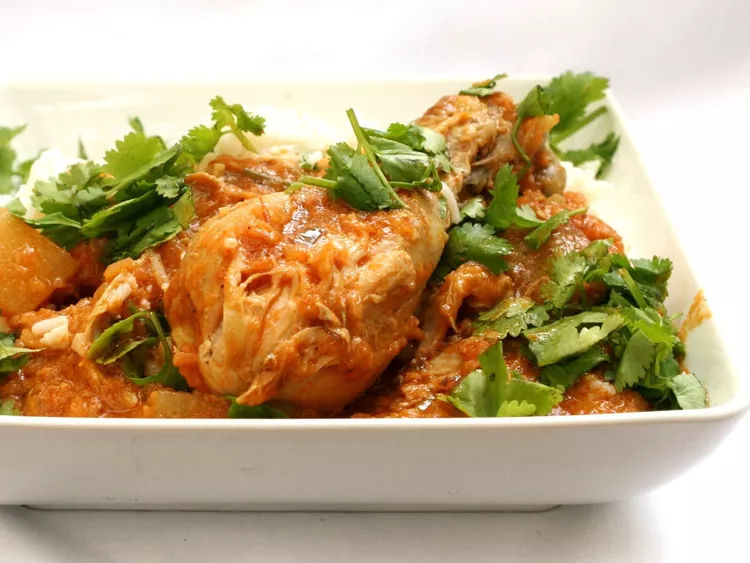

Chicken Vindaloo

Chicken vindaloo is a spicy curry dish. It was originally a Portuguese dish of spicy pork, but you can add any meat you wish.
Prep time: 30 mins
Cook time: 35 mins
Ingredients
- 1 teaspoon ground turmeric
- ½ teaspoon ground cardamom
- ½ tablespoon ground cinnamon
- ½ teaspoon ground coriander
- ½ teaspoon ground cloves
- ½ teaspoon ground cumin
- ½ teaspoon paprika
- ¼ teaspoon cayenne pepper, or to taste
- 2 cups chopped onion
- 1 tablespoon olive oil
- 3 cloves garlic, minced
- 1 tablespoon grated fresh ginger root
- 1 tablespoon tomato paste
- 1 pound skinless, boneless chicken thighs, cut into 1 1/2-inch pieces
- 2 large potatoes, cut into 1/2-inch cubes
- 2 (14.5 ounce) cans diced tomatoes, drained
- 1 ½ cups chicken broth
- 2 tablespoons wine vinegar
- 1 bay leaf
- salt and black pepper to taste
Let's Cook
- Toast turmeric, cardamom, cinnamon, coriander, cloves, cumin, paprika, and cayenne pepper in a Dutch oven or large pot over medium-low heat until fragrant, about 2 minutes. Stir spices constantly as they toast to ensure they do not burn.
- Stir in onion, olive oil, garlic, and ginger. Increase heat to medium; cook and stir until onion is softened, about 5 minutes.
- Stir in tomato paste until no lumps of paste remain. Add chicken, potatoes, tomatoes, broth, wine vinegar, and bay leaf; bring to a boil, then reduce heat to medium-low. Cover and simmer until potatoes are tender and chicken is no longer pink in the center, about 15 minutes.
- Uncover and continue cooking until sauce thickens slightly, about 5 minutes more. Season with salt, black pepper, and additional cayenne pepper.
To Main Page